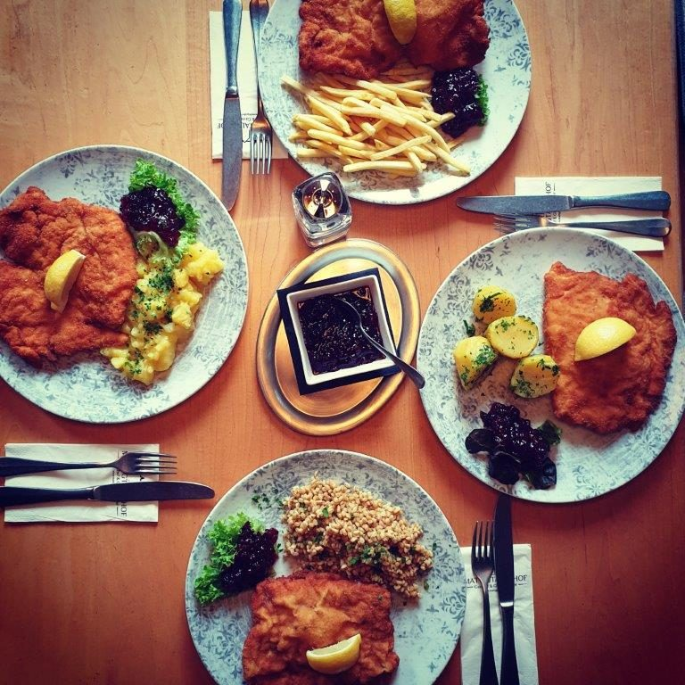

À la carte
Speisekarte
Besondere Schmankerl, Klassiker, Leichtes und Feines – Innviertler Küche mit regionalen Produkten, dazu Gerichte, die international gedacht sind. Alle Preise in Euro.
Saisonales
Burgerwochen
Bis 28. Februar laufen die Burgerwochen im Mattigtalerhof. Start ist am 28. Jänner 2026.
Weitere Schwerpunkte im Jahreslauf: ProBierMa(h)l im März, Lord of the Wings im Juni und die Martini Gans im November.
